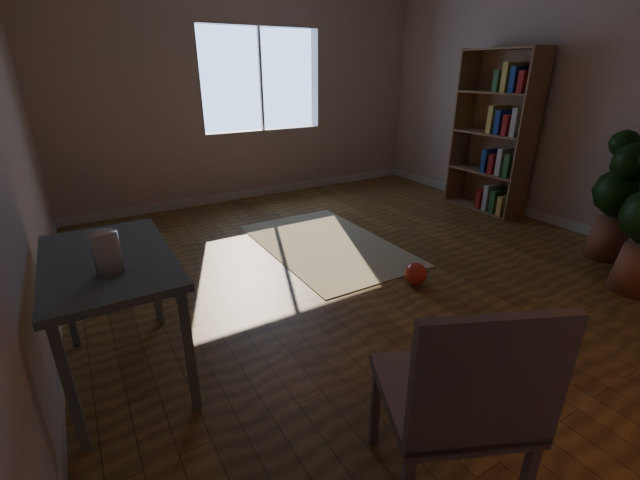
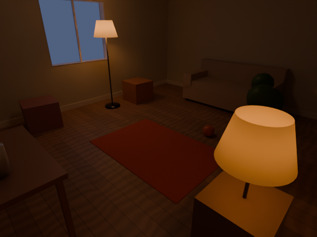
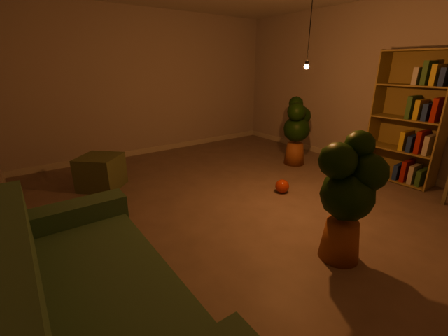
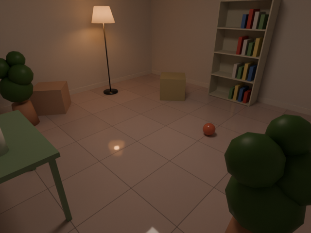
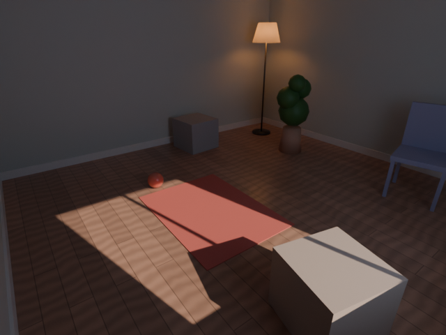
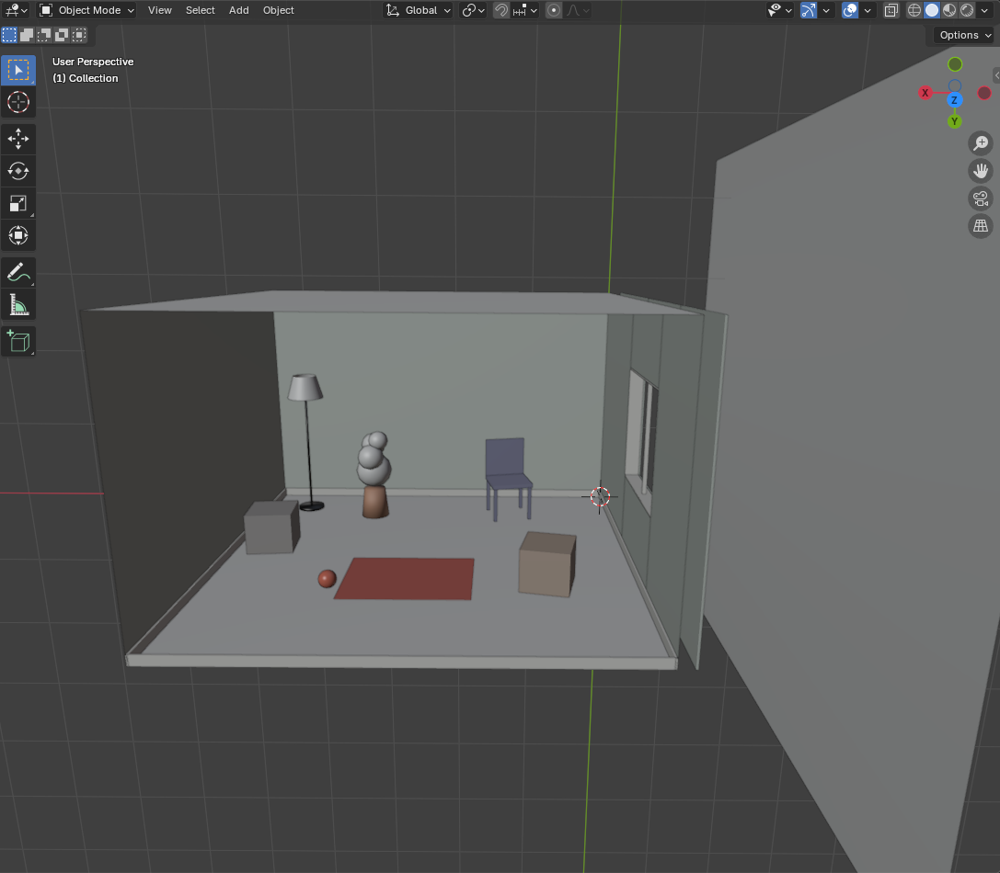
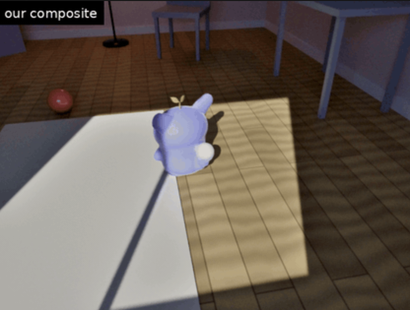

BEARS: Believable Environment-Aware Reality Simulation
SlidesWe have reconstructed indoor geometry and camera views, estimate scene illumination, and rendered light and shadows onto an animated character for a more convincing composite. Remaining work to be done revolves around making the scenes more realistic and considering more complex lighting situations with many light sources.
Across four held-out scenes, our rendering pipeline improves over the ARKit-style baseline in shadow-region FLIP and creature LPIPS. Lower values indicate closer agreement with path-traced ground truth.
We generated eight repeatable indoor scenes: four lighting/material types, each with development and held-out test variants. Fixed seeds determine room dimensions, furniture, placement zones, floor materials, and light positions. Scenes are built and rendered through our Blender pipeline.




Using supplied camera poses, we align simulated LiDAR depth from multiple views to reconstruct a 600,000-triangle room mesh. We render from tracked viewpoints and fit tone mapping, exposure, and white balance to better match the capture.


We compare image-region radiance to the room’s median to find bright candidates. Using camera poses, candidates are checked across views for consistent evidence of a source. Depending on the region shape, we estimate a rectangular area light or a small circular source. Sunlight is handled separately: bright floor patches are confirmed across views, and strength and direction are estimated from lit versus nearby shaded floor. Estimated sources are then rendered in Blender to illuminate the room and character.

Lighting and shadows are integrated onto the animated character within the reconstructed scene.